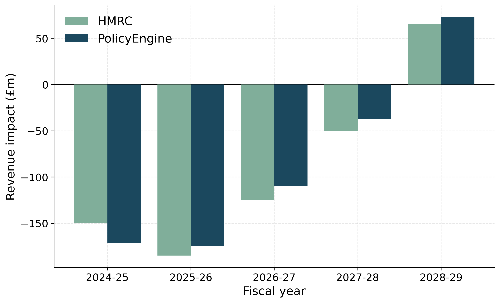
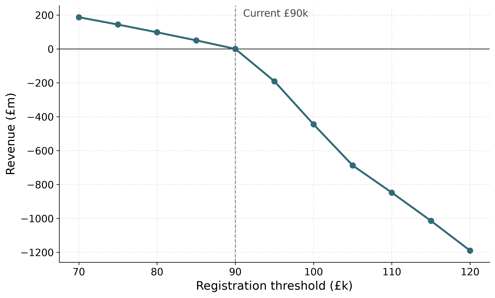
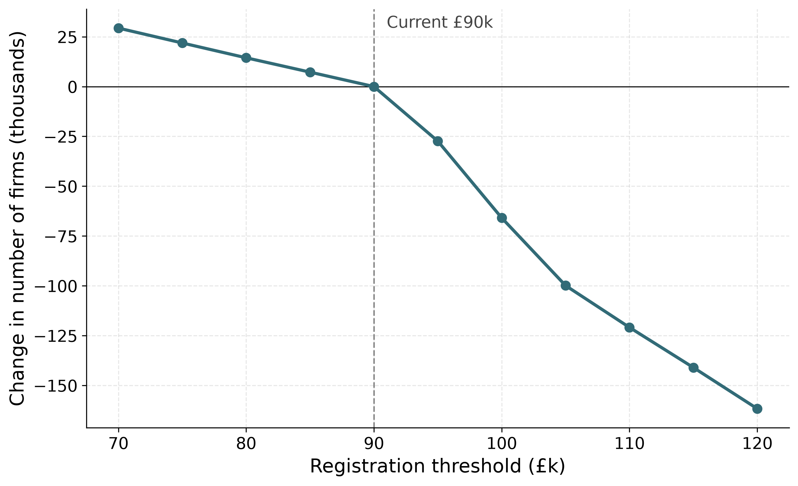

Anchor reform on the £85k / 2023-24 vintage (HMRC's pre-reform basis at the March 2024 costing); forward sweep on the £90k / 2024-25 vintage.

PolicyEngine −171/−175/−110/−38/+72.5 vs HMRC −150/−185/−125/−50/+65 (£m). Both turn positive by 2028-29. Affected-firm count 32.6k registered ≈ HMRC's 28k.

+665m at £70k → −1205m at £120k, zero at the current £90k. Paper: +657.7 → −1156.

Forward sweep relative to the current £90k threshold; smooth-counterfactual method.